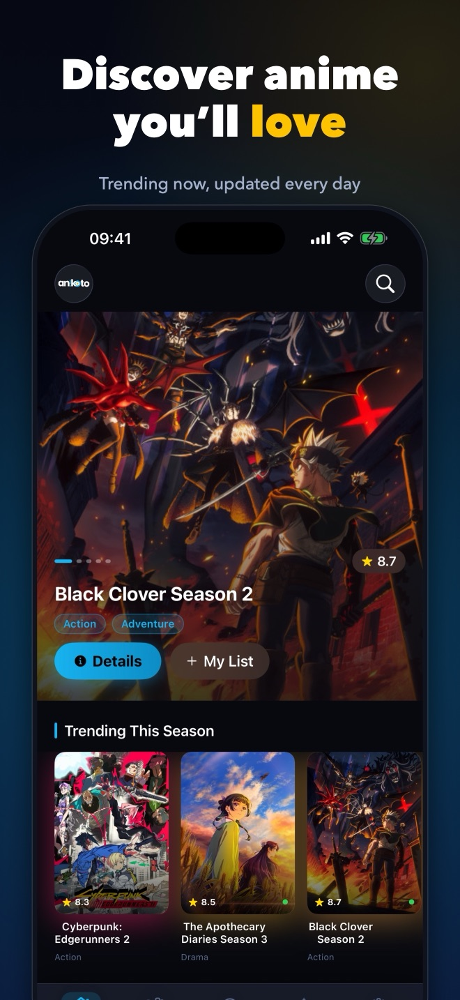
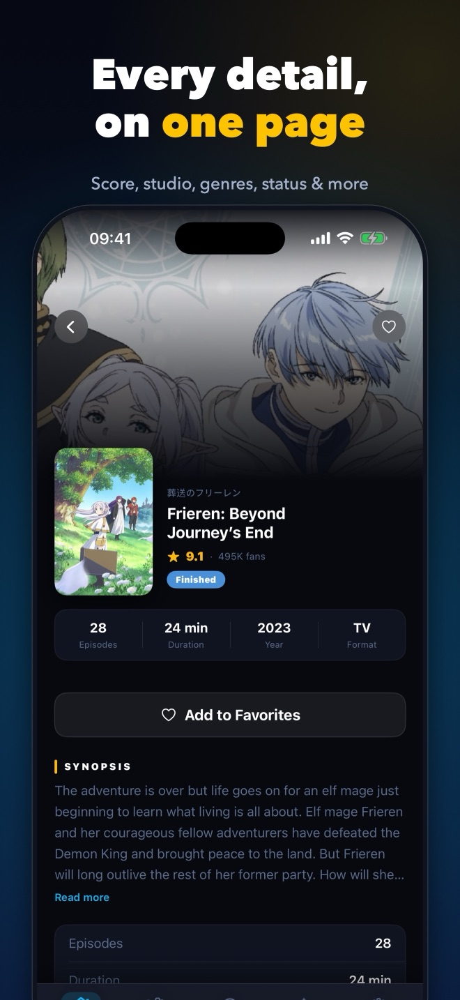
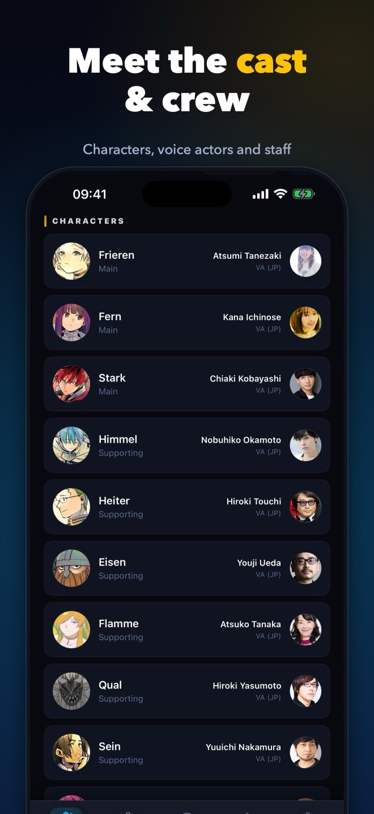
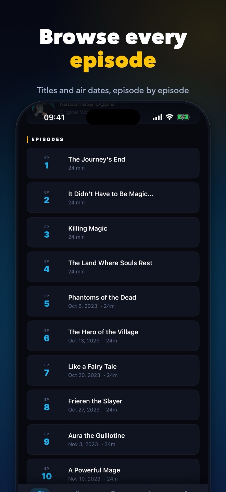
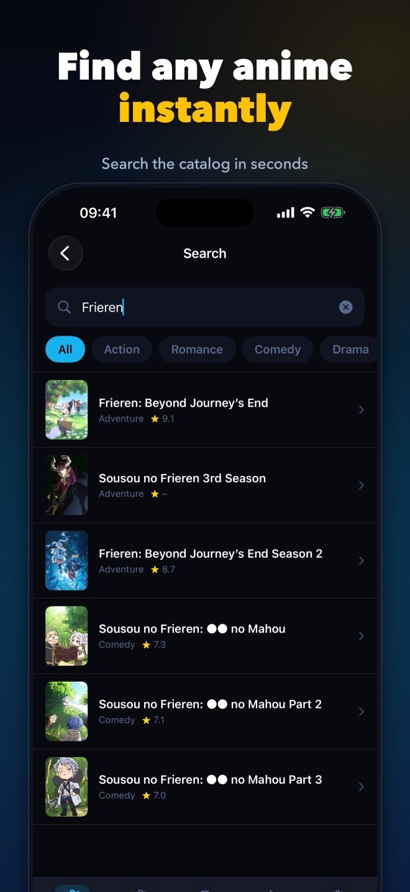
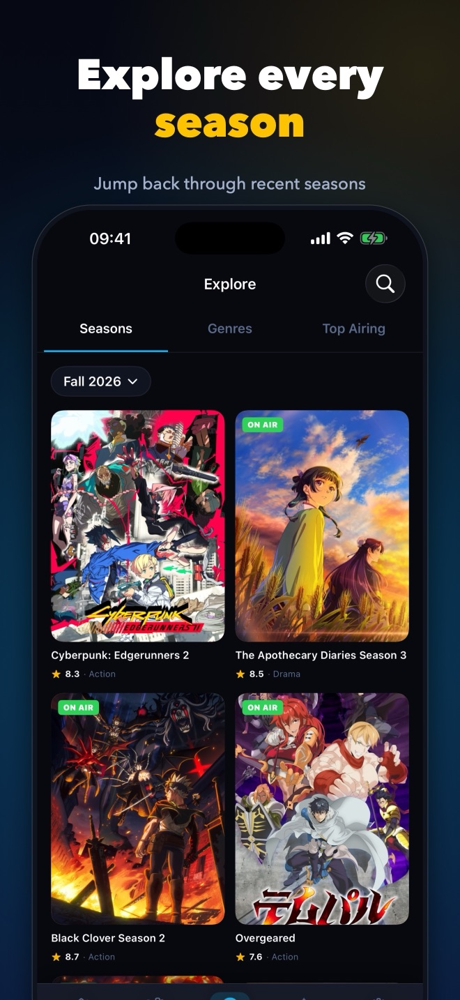
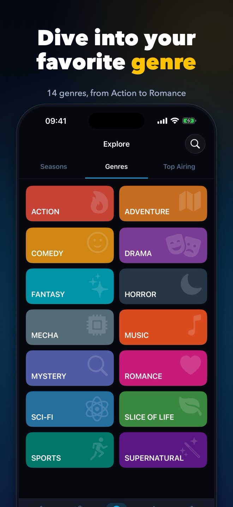
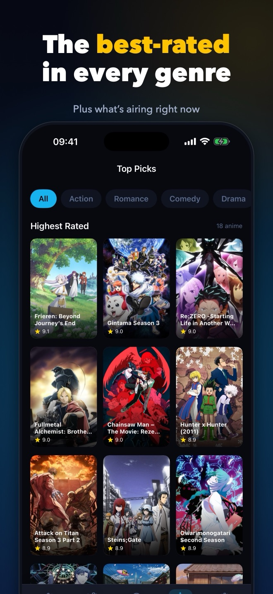
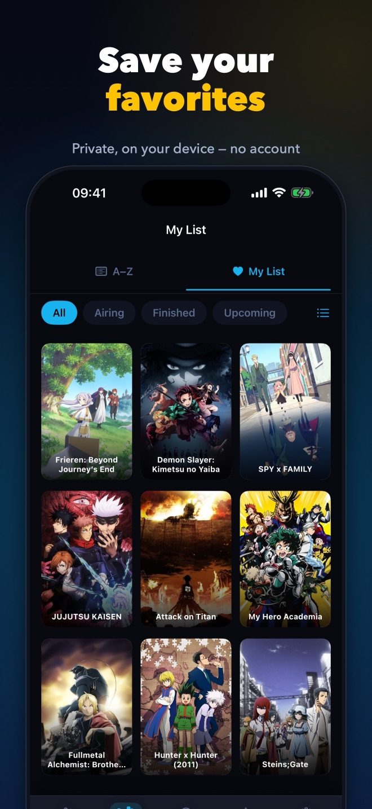

Your pocket guide to anime
Discover what's trending, explore every season and genre, and dig into the cast, staff and episodes of any series — in one fast, beautiful app.
Free to useNo account needediPhone · iOS 16+English & Français









What you get
Everything about the anime you love
Anikoto is an information and discovery guide: clear, quick, and designed for a dark screen.
Discover what's hot
Trending now, this season's lineup and the all-time top rated — refreshed every time you open the app.
Every detail on one page
Synopsis, score, studio, genres, tags, format, source and status, laid out cleanly from top to bottom.
Cast & staff
See the characters, their Japanese voice actors and the key staff behind each series.
Full episode lists
Browse episode titles and air dates, and see when the next episode airs.
Search and explore
Find any title instantly, browse by genre, or jump through the last four seasons.
Favorites, on your device
Save the anime you love. No account and no sign-up — your list stays on your iPhone.
Good to know
Anikoto doesn't stream or download any video. It's a guide to help you find and learn about anime.
Anime information is provided by AniList. The app is free and supported by ads; see the Privacy Policy for how ads and your choices work.